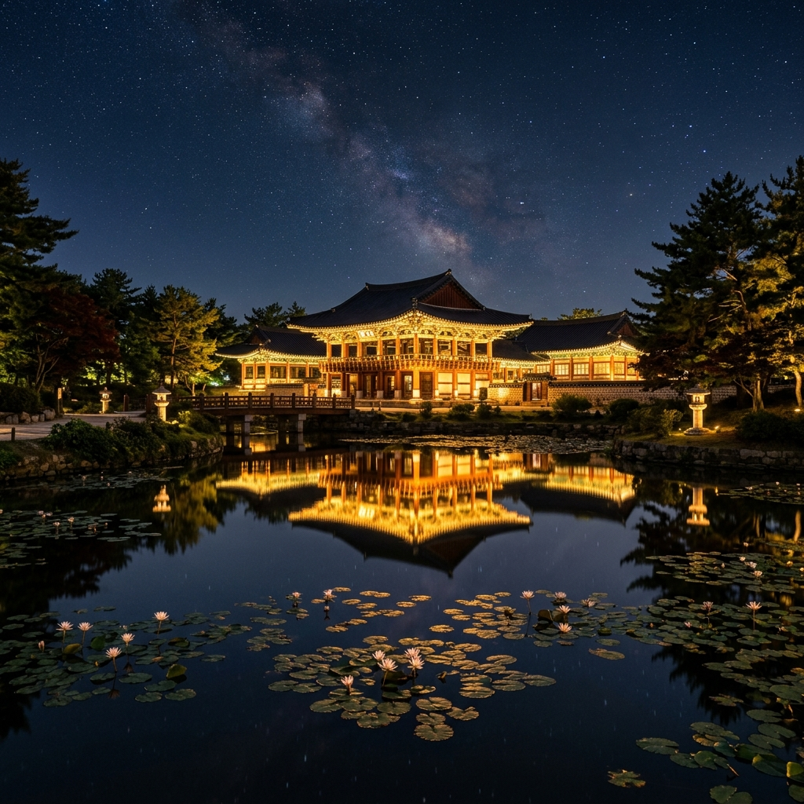
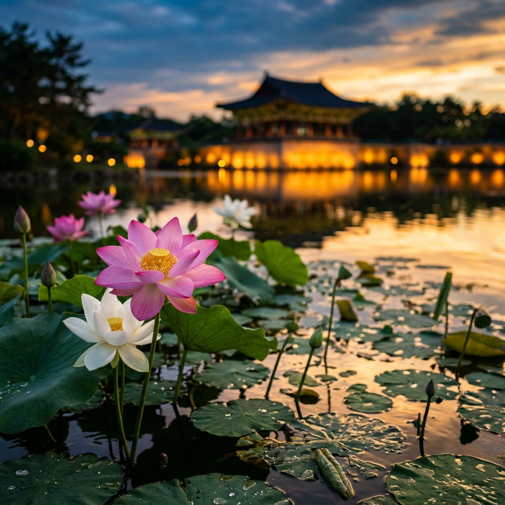
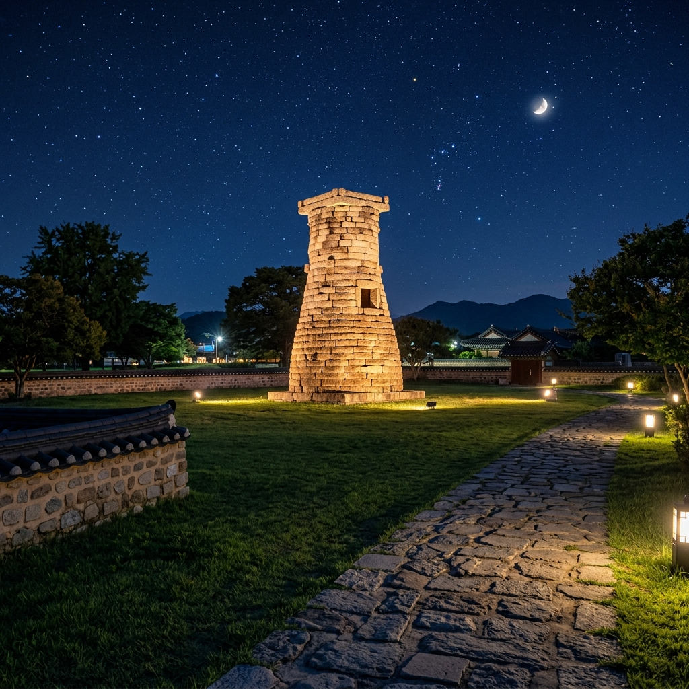

경주에는 야경 명소가 여럿 있지만, 그중에서도 동궁과 월지는 단연 첫 손에 꼽힙니다.
이유는 단순합니다. 인공 연못 월지에 반영된 동궁 전각들의 야간 조명이 흔들리는 수면과 어우러져 어떤 구도로 찍어도 그림 같은 사진이 나오기 때문입니다. 낮에 보는 유적지와는 전혀 다른 표정이 야간에 펼쳐집니다.
동궁과 월지는 신라 문무왕 14년(674년)에 조성된 왕궁 내 별궁과 연못입니다.
당시 동궁은 태자가 거처하던 공간이었으며, 월지는 궁궐 정원의 핵심 공간으로 각종 연회와 의식이 열렸습니다. 1975년 발굴 당시 연못 바닥에서 "안압지(雁鴨池)"라는 명문이 새겨진 유물이 나오면서 오랫동안 "안압지"로 불렸지만, 2011년 발굴 조사 결과를 바탕으로 신라 당시 이름인 "월지(月池)"를 살려 동궁과 월지로 공식 명칭이 변경됐습니다.
발굴 당시 금관을 비롯한 3만여 점의 유물이 출토되었으며, 현재 상당 부분은 국립경주박물관에서 소장·전시 중입니다. 야경을 즐기면서 1,300년 전 신라 왕족들이 뛰놀던 공간을 걷는 묘한 감동이 있습니다.
| 구분 | 내용 |
|---|---|
| 입장 시간 | 09:00 ~ 21:30 (퇴장 22:00) |
| 성인 입장료 | 3,000원 |
| 청소년 입장료 | 2,000원 |
| 어린이 입장료 | 1,000원 |
| 휴일 | 연중무휴 |
| 위치 | 경상북도 경주시 원화로 102 |
야간 입장 마감 시간은 오후 9시 30분으로, 이 시간 이후에는 새로운 입장객을 받지 않습니다.
퇴장은 오후 10시까지 가능하므로 늦어도 오후 9시 이전에 입장하는 것이 좋습니다. 야경이 가장 아름다운 시간대는 해가 완전히 진 뒤인 저녁 8시 30분~9시 사이입니다. 여름에는 해가 늦게 지므로 낮보다 조금 늦은 시간에 방문하면 노을과 야경을 순서대로 즐길 수 있습니다.
경주 통합입장권을 이용하면 동궁과 월지, 불국사, 석굴암 등 여러 명소를 묶어 할인된 가격에 이용할 수 있으니 여러 곳을 함께 방문할 계획이라면 통합입장권을 검토해 보세요.
요금은 연도별로 변경될 수 있으므로 방문 전 경주시설공단 공식 홈페이지에서 최신 요금을 한 번 더 확인하시길 권합니다.
경주를 처음 방문하는 분들이 자주 하는 질문이 있습니다. "낮과 밤 중 어느 때 가야 하나요?"
결론부터 말씀드리면 야간 방문을 강력히 추천합니다. 낮에도 유적의 규모와 연못의 아름다움을 감상할 수 있지만, 야간에 조명이 켜진 동궁 전각들이 월지 수면에 반영되는 장면은 낮에는 절대 볼 수 없는 풍경입니다.
낮에는 유적의 세부 구조와 정원 조경을 상세히 살펴볼 수 있는 장점이 있습니다.
연못 주변 산책로를 천천히 걸으며 복원된 전각과 당시 지형을 이해하는 데는 낮이 더 유리합니다. 하지만 사진 맛집으로서의 동궁과 월지는 확실히 야간이 압도적입니다. 한 가지를 선택해야 한다면 주저 없이 야간을 선택하세요. 시간이 된다면 낮에 다른 유적을 둘러보고 저녁 무렵부터 이곳으로 오는 것이 이상적인 일정입니다.

동궁과 월지를 여름에 찾아야 하는 특별한 이유가 있습니다. 바로 월지 연꽃입니다.
7월이 되면 연못 수면 위로 연꽃이 하나둘 피어나기 시작합니다. 야간 조명에 은은하게 빛나는 연꽃과 그 위로 흔들리는 전각 반영이 겹쳐지는 장면은 여름 경주만의 특별한 볼거리입니다. 봄에 오면 볼 수 없고, 가을에도 다른 표정이지만, 연꽃이 피는 여름밤만의 풍경이 따로 있습니다.
연꽃은 낮에도 아름답지만, 야간 조명 아래의 연꽃은 또 다른 신비감을 줍니다.
수면 아래에서 올라오는 반영 빛과 꽃잎이 겹쳐지는 장면을 향해 카메라를 들이대는 방문객들의 모습이 자연스럽게 많아지는 계절입니다. 연꽃은 오전 중에 꽃이 피고 저녁에는 오므라드는 특성이 있지만, 야간 조명 아래에서는 꽃이 오므라든 상태로도 반영과 함께 아름다운 실루엣을 연출합니다.
동궁과 월지 내부는 연못 주변을 한 바퀴 도는 산책로로 구성되어 있습니다.
입구에서 들어서면 먼저 발굴 당시의 유물과 동궁의 역사를 설명하는 전시 공간이 나옵니다. 이후 월지를 왼쪽에 두고 걷다 보면 복원된 임해전, 월지 동편 전각 터를 차례로 지나게 됩니다. 전체 코스를 천천히 걸으면 약 30~40분이면 충분합니다.
포토 스팟은 여러 곳이지만, 특히 동쪽 편 제방 위가 가장 인기 있습니다.
이곳에서 서쪽 방향으로 바라보면 복원된 세 채의 전각과 연못 반영이 한 프레임에 들어옵니다. 많은 방문객이 이 자리를 차지하기 위해 줄을 서기도 하는 최고의 명당입니다. 삼각대를 챙겨온다면 장노출 야경 사진에 도전해 볼 수 있습니다. 흔들림 없는 반영 사진은 장노출이 최고입니다.
스마트폰 야경 모드(나이트 모드)를 활용하면 별도 장비 없이도 충분히 아름다운 사진을 남길 수 있습니다. 조명이 켜진 전각을 배경으로 셀카를 찍어도 자동으로 작품이 되는 배경 덕분에, 이곳에서 찍은 사진은 대부분 소셜미디어에 올리기 좋은 결과물이 나옵니다.
동궁과 월지에서 남쪽으로 걸어서 10분 거리에 첨성대가 있습니다.
신라 선덕여왕 때(632~647년) 세워진 첨성대는 현존하는 동양 최고(最古)의 천문대로, 동글동글한 돌탑 형태가 독특합니다. 낮에는 그저 돌탑으로 보일 수 있지만, 야간 조명이 켜진 첨성대는 주변 잔디 광장과 어우러져 포근하고 낭만적인 분위기를 자아냅니다.
첨성대 주변 잔디 광장에 앉아 조명 받은 첨성대를 바라보는 것이 경주 야경의 또 다른 즐거움입니다.
밤에는 돌아다니는 고양이들이 많아 고양이 야행을 즐기는 방문객도 있습니다. 첨성대에서 조금 더 남쪽으로 가면 대릉원(황남대총 등 신라 고분군)도 야간 조명이 켜져 있어 함께 둘러볼 수 있습니다. 동궁과 월지 → 첨성대 → 대릉원 세 곳을 묶어 걷는 야경 산책은 약 1.5~2시간이면 여유 있게 즐길 수 있는 코스입니다.

동궁과 월지와 첨성대를 둘러본 후에는 근처 황리단길로 이동해 저녁을 즐기는 것이 요즘 경주 여행의 공식 코스입니다.
황리단길은 황오리와 황남동 일대에 걸쳐 형성된 카페·맛집 골목으로, 한옥을 개조한 카페와 식당이 줄지어 있습니다. 분황사 인근 좁은 골목을 따라 걷다 보면 오래된 경주 가정집이 세련된 카페로 변신한 풍경이 정겹게 이어집니다.
황리단길에는 경주빵, 찰보리빵, 황남빵 등 경주 전통 과자류를 파는 가게들과, 경주 음식을 현대적으로 재해석한 식당들이 즐비합니다.
저녁 식사는 1인당 1만 5,000원~3만 원 사이로 다양한 선택지가 있습니다. 식사 후 한옥 카페에서 커피 한 잔을 즐기며 경주의 밤을 마무리하면 여행 만족도가 한층 높아집니다. 주말에는 방문객이 많으니 인기 식당은 사전 예약이나 이른 시간 방문을 권장합니다.
동궁과 월지는 경주 시내 중심부에 위치해 있어 접근이 편리합니다.
KTX 신경주역에서 출발하면 시내버스 70번 또는 700번(경주버스터미널 방면)을 타고 동궁과월지 정류장에서 내리면 됩니다. 경주역(구 경주역)에서는 도보로 15~20분 거리이며, 자전거 대여를 이용하면 10분 내외로 이동할 수 있습니다.
자가용을 이용하는 경우 내비게이션에 "경주 동궁과 월지"를 검색하면 됩니다.
주소는 경상북도 경주시 원화로 102입니다. 입구 주변에 유료 주차장이 있으며, 여름 성수기 주말에는 주차 공간이 금방 차므로 가능하면 대중교통을 이용하거나 오전에 다른 유적을 먼저 방문하고 야간에 이곳으로 이동하는 방식을 추천합니다. 경주 시내에서 렌터카나 전동 킥보드를 이용하면 주차 고민 없이 여러 명소를 편리하게 이동할 수 있습니다.
여름 경주는 낮이 길어 저녁 7시가 넘어도 해가 남아 있습니다.
동궁과 월지의 조명이 가장 인상적으로 보이는 시간은 주변이 완전히 어두워지는 오후 8시 30분~9시입니다. 이 시간에 입장하면 퇴장 전까지 약 30~40분의 여유가 있으니 서두르지 않아도 됩니다. 입장 마감 직전(오후 9시 20~30분)에는 입장이 제한될 수 있으므로 여유 있게 방문하세요.
여름밤 연못 주변은 모기가 매우 많습니다.
모기 기피제를 반드시 챙겨 가시고, 긴 소매나 얇은 겉옷을 준비해 두면 쾌적하게 산책을 즐길 수 있습니다. 야경 촬영에 집중하다 보면 시간 가는 줄 모르는 곳이라 준비 없이 오면 모기에 시달리기 쉬운 점을 미리 아셔야 합니다.
경주는 2박 3일 일정이 가장 여유 있지만, 당일치기라면 동궁과 월지 → 첨성대 → 황리단길 코스만으로도 충분히 만족스러운 여름밤 경험이 됩니다.
경주에는 야경으로 유명한 곳이 여러 군데 있습니다.
대표적으로 동궁과 월지, 첨성대, 대릉원, 불국사(야간 개방 시즌 한정), 황리단길 등이 있습니다. 하루에 모두 돌기는 어렵기 때문에 우선순위를 잡아두는 것이 좋습니다.
| 명소 | 야경 매력 | 추천 이유 |
|---|---|---|
| 동궁과 월지 | 수면 반영 + 고건물 조명 | 경주 야경 1순위, 1,300년 신라 감성 |
| 첨성대 | 포근한 잔디 + 조명 돌탑 | 도보 이동 가능, 여유로운 산책 |
| 대릉원 | 야간 고분 조명 | 첨성대와 세트 코스 |
| 황리단길 | 한옥 카페 야간 감성 | 식사·카페 연계, 젊은 분위기 |
시간이 한정적이라면 동궁과 월지 → 첨성대 → 황리단길 세 곳을 묶는 코스가 가장 효율적입니다.
동궁과 월지에서 야경 사진을 찍고, 첨성대로 이동해 잠시 쉬며 야경을 감상한 뒤, 황리단길에서 저녁 식사로 마무리하면 약 3~4시간 코스가 됩니다. 체력이 남는다면 황리단길에서 대릉원 방향으로 잠시 걸어가 고분군의 밤 풍경도 감상해 보세요.